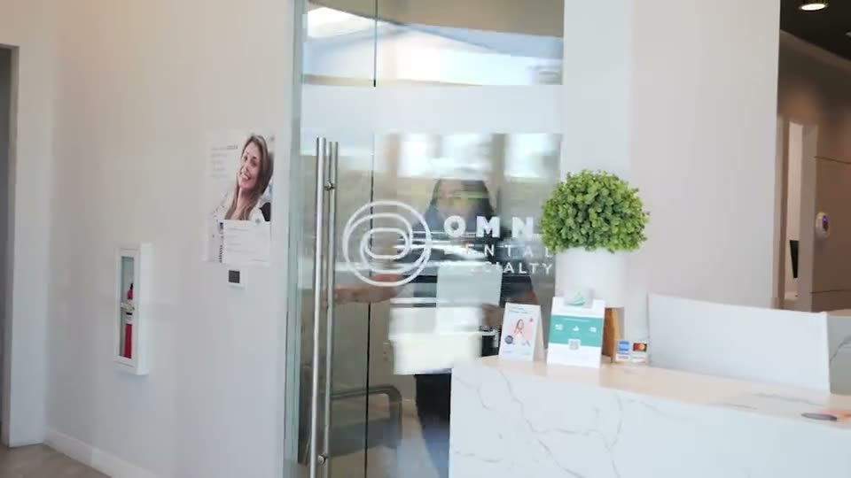

Expert Dentist Near College Park: Transform Your Smile with Omni Dental Specialty’s Caring Team
When you need a dentist near College Park, our experienced team provides comprehensive services from routine cleanings to complex procedures, all in a welcoming environment designed with your needs in mind.
Dr. Kourosh Keihani, DDSCosmetic Dentist & General Dentist
Visit our location1690 E. Gonzales Road, Oxnard
Why patients choose us
Why Choose Omni Dental Specialty: Trusted Expertise and Compassionate Care in College Park
Our College Park practice combines advanced technology with personalized treatment plans, ensuring optimal results for every patient in 2025 and beyond.
01
State-of-the-Art Technology for Precise Treatment
At Omni Dental Specialty, we invest in cutting-edge equipment including 3D cone beam CT scanners, digital impressions, and laser therapy systems for patients throughout the College Park area. These technologies enable minimally invasive procedures, reduce treatment time by up to 50%, and improve accuracy in diagnosis and treatment planning. Your comfort increases while recovery time decreases, making your dental care experience more efficient and effective than ever before. Our team stays current with the latest dental technology to provide you with the highest quality care in 2025.
02
Personalized Care Plans Tailored to Your Needs
Every patient receives a customized treatment strategy based on comprehensive evaluations and individual health goals. We consider your medical history, lifestyle factors, and personal preferences when designing your care plan. Our team explains each option thoroughly, empowering you to make informed decisions about your oral health. Whether you need general dentistry services, cosmetic enhancements, or restorative work, your treatment will be specifically designed to address your unique dental concerns and smile goals.
03
Commitment to Patient Comfort and Convenience
Omni Dental Specialty offers sedation options, same-day emergency appointments, and flexible scheduling. Our multilingual staff assists with insurance verification and payment plans. We maintain a 98% patient satisfaction rate through attentive care and clear communication throughout your treatment journey. Our practice is designed to make dental care accessible for the entire family, with services appropriate for patients of all ages.
Ready to experience exceptional dental care? Call (805) 366-6000 today for your consultation with our College Park dentist team.
Every Omni Dental Specialty team member exceeds industry standards for professional development.
Our dental hygienists complete biannual training in the latest preventive care techniques, while our dental assistants maintain current CPR certification and infection control credentials. This commitment to ongoing education means you receive care using the most effective, evidence-based methods available when visiting our practice near College Park. We believe that continuous learning is essential to providing exceptional dental care that meets the evolving needs of our patients.
Schedule your consultation today to experience the difference our expertly trained team makes in your dental health journey.
Patient-Centered Approach Focused on Your Comfort and Oral Health
At Omni Dental Specialty, we prioritize your individual needs and comfort throughout every dental visit. Our team takes time to understand your concerns, answer questions, and create personalized treatment plans that align with your oral health goals and lifestyle. As your preferred dentist near College Park, we combine clinical excellence with compassionate care to ensure a positive experience for patients of all ages.
01
Comprehensive Consultations and Personalized Treatment Plans
Every patient receives a thorough initial consultation where we discuss your dental history, current concerns, and future goals. We perform comprehensive examinations using advanced diagnostic tools to develop customized treatment strategies. Your plan considers factors like budget, timeline, and personal preferences. We explain each procedure clearly, outlining benefits and alternatives so you can make informed decisions about your oral health. This detailed approach ensures that your dental care is perfectly tailored to your unique situation.
03
Open Communication and Transparent Pricing
Clear communication forms the foundation of our patient relationships. We provide detailed treatment explanations, show visual aids when helpful, and encourage questions at every stage. Our transparent pricing structure includes written estimates before treatment begins, discussion of insurance coverage, and flexible payment options. We believe informed patients make better health decisions, so we share all relevant information openly. Our team works with numerous dental insurance providers to maximize your benefits and minimize out-of-pocket expenses.
02
Gentle Techniques and Modern Comfort Amenities
Our practice employs gentle, minimally invasive techniques to ensure comfortable experiences. We offer sedation options for anxious patients, use topical anesthetics before injections, and maintain a calm, soothing environment. Our treatment rooms feature ergonomic chairs, warm blankets, and entertainment options. We schedule adequate time for each appointment, avoiding rushed procedures that can increase discomfort. These thoughtful touches make a significant difference in your dental experience, especially for patients who may feel nervous about dental visits.
Your comfort and satisfaction drive everything we do at Omni Dental Specialty. Experience the difference personalized dental care makes when you choose us as your dentist near College Park. Schedule your consultation today to discover how our patient-centered approach can transform your dental experience. Call (805) 366-6000 or request an appointment online.
State-of-the-Art Technology for Optimal Care in 2025
01
Advanced Digital Imaging Systems
Omni Dental Specialty employs cutting-edge digital X-ray and 3D cone beam CT technology, delivering 40% less radiation exposure while providing crystal-clear diagnostic images for our College Park patients. Our high-resolution intraoral cameras capture detailed views of your teeth and gums, allowing you to see exactly what we see during examinations. This advanced imaging technology enables precise treatment planning and early detection of dental issues before they become costly problems. Digital imaging has revolutionized how dentistry is practiced, allowing our team to provide more accurate diagnoses and treatment plans.
04
Digital Treatment Planning
Omni Dental Specialty utilizes sophisticated digital planning software for complex procedures like implants and orthodontics. 3D virtual modeling allows us to show you expected results before treatment begins. This technology ensures predictable outcomes and helps you make informed decisions about your dental care. Our dentists can plan your entire treatment digitally, from start to finish, providing a clear roadmap for achieving your ideal smile. This level of precision and planning leads to more successful outcomes and higher patient satisfaction.
02
Same-Day Crown Technology
Experience the convenience of CEREC same-day crowns at Omni Dental Specialty. This revolutionary technology eliminates multiple appointments and temporary dental crowns. Our in-office milling system creates perfectly fitted, durable ceramic crowns in just 90 minutes. The computer-aided design ensures optimal bite alignment and natural aesthetics that match your existing teeth. College Park patients appreciate the time saved with this innovative approach to dental crown placement, allowing them to resume their normal activities with a fully restored smile in a single visit.
03
Laser Dentistry Solutions
Our state-of-the-art dental lasers transform traditionally uncomfortable procedures into virtually pain-free experiences. Soft tissue lasers eliminate the need for sutures in gum treatments, reducing healing time by up to 50%. For cavity detection, our DIAGNOdent laser identifies decay at the earliest stages, often before it’s visible on X-rays. These advanced tools allow our practice to provide more comfortable treatment with less recovery time, making your dental care experience better than ever.
Ready to experience the future of dentistry? Call Omni Dental Specialty today at (805) 366-6000 to schedule your appointment and discover how our advanced technology creates a more comfortable, efficient dental experience for College Park residents.
¹ American Dental Association. (2024). Digital Radiography in Dental Practice. ² Journal of Prosthetic Dentistry. (2024). Same-Day Crown Technology Outcomes. ³ Academy of Laser Dentistry. (2024). Soft Tissue Healing with Dental Lasers.
What we offer
Dental Services in Oxnard, CA
Routine care, smile makeovers and tooth replacement under one roof at 1690 E. Gonzales Road.
01
Dental Implants
Titanium implants that replace missing teeth with stable, natural-looking restorations.
Not sure what you need?Start With an Exam in OxnardDr. Keihani will look at what is going on and explain your options.Book Online (opens in a new tab)
General dentistry
General Dentistry Services: Foundational Care for Your Oral Health and Smiles
Omni Dental Specialty provides comprehensive general dentistry services to maintain and enhance your oral health throughout every stage of life. Our experienced team delivers personalized care using advanced technology to ensure comfortable, efficient treatment for you and your family near College Park. From routine cleanings to fillings and preventive care, our general dentistry services form the foundation of a healthy smile that lasts a lifetime.
01
Comprehensive Examinations
Regular dental examinations at Omni Dental Specialty detect potential issues before they become painful or expensive problems. Our thorough evaluations include digital X-rays, oral cancer screenings, and periodontal assessments to monitor your complete oral health. During each visit, we create customized treatment plans addressing your specific needs and goals. These comprehensive exams allow us to identify concerns early and develop strategies to maintain or improve your dental health.
Schedule your comprehensive exam today by calling Omni Dental Specialty to protect your smile and overall health.
04
Gum Disease Management
Gum disease affects nearly half of adults over 30¹, potentially leading to tooth loss and systemic health issues. Omni Dental Specialty provides effective periodontal therapy including deep cleanings, antimicrobial treatments, and ongoing maintenance to restore gum health. Our gentle techniques reduce inflammation, eliminate infection, and preserve your natural teeth. The connection between oral health and overall health makes gum disease management an important aspect of your total wellness care.
02
Professional Cleanings
Professional dental cleanings remove harmful plaque and tartar that regular brushing cannot eliminate. Our skilled hygienists gently clean above and below the gum line, preventing cavities and gum disease while brightening your smile. We recommend cleanings every six months to maintain optimal oral health and fresh breath. Regular dental cleanings are an essential part of preventive care, helping you avoid more extensive and costly procedures in the future.
03
Cavity Treatment
When cavities develop, Omni Dental Specialty offers prompt, comfortable treatment using tooth-colored composite fillings that blend seamlessly with your natural teeth. Our minimally invasive approach preserves healthy tooth structure while eliminating decay and restoring function. Early cavity treatment prevents more extensive procedures later. We use the latest techniques and materials to ensure your dental fillings are both durable and aesthetically pleasing.
Don’t wait for dental problems to worsen. Contact Omni Dental Specialty today to schedule your general dentistry appointment and maintain a healthy, confident smile for life. Our College Park dentist team is ready to provide the exceptional care you deserve.
¹Centers for Disease Control and Prevention. (2018). Periodontal Disease. https://www.cdc.gov/oralhealth/conditions/periodontal-disease.html
Exams and cleanings
Comprehensive Exams and Cleanings for All Ages
01
Professional Dental Care for Your Entire Family
Omni Dental Specialty provides comprehensive exams and dental cleanings designed to maintain optimal oral health for patients of all ages near College Park. Our experienced team uses advanced diagnostic technology to detect potential issues early, preventing costly treatments down the road. During your visit, we thoroughly examine teeth, gums, and surrounding tissues while performing professional cleanings that remove plaque and tartar buildup your toothbrush can’t reach.
Regular dental visits every six months help prevent cavities, gum disease, and tooth loss. Our gentle approach ensures comfortable experiences for children, adults, and seniors alike. We educate patients about proper oral hygiene techniques and provide personalized recommendations based on individual needs and risk factors. By establishing good dental habits early and maintaining them throughout life, we help our patients achieve lasting oral health.
02
What to Expect During Your Visit
Your comprehensive exam includes digital X-rays, oral cancer screening, and evaluation of existing dental work. We check for signs of decay, gum inflammation, and bite problems that could lead to future complications. Our hygienists use specialized instruments to clean below the gumline, polish teeth, and apply fluoride treatments when necessary to protect against decay.
Each appointment typically lasts 45-60 minutes, allowing ample time for thorough care and answering your questions. We document findings and create customized treatment plans addressing any concerns discovered during examination. Our detailed approach ensures that no aspect of your oral health is overlooked, providing a solid foundation for preventive care.
03
Benefits of Regular Dental Visits
Professional cleanings remove harmful bacteria that cause bad breath and gum disease. Early detection through routine exams saves money by addressing small problems before they require extensive procedures. Studies show patients who maintain regular dental visits have lower risks of heart disease and diabetes complications¹.
Children who receive consistent preventive care develop healthier habits and experience fewer dental problems throughout life. Schedule your family’s appointments today by calling (805) 366-6000 for personalized dental care that protects your smile. Our practice welcomes patients from throughout the College Park area, making us your convenient local dentist for the entire family.
¹American Dental Association. “Oral Health and Overall Health.” ADA.org, 2023.
Preventive care
Preventive Care and Personalized Treatment Plans
At Omni Dental Specialty, we believe exceptional dental health starts with proactive prevention and individualized care strategies. Our comprehensive approach combines cutting-edge diagnostic technology with personalized treatment planning to protect your smile for life. As your trusted dentist near College Park, we focus on preventing problems before they start while creating customized care plans that address your unique needs.
01
Regular Check-ups and Early Detection
Routine dental examinations every six months enable our team to identify potential issues before they become costly problems. During these visits, we perform thorough cleanings, oral cancer screenings, and digital X-rays to catch cavities, gum disease, and other conditions in their earliest stages¹. Early detection typically reduces treatment complexity by up to 80% and saves patients thousands in restorative procedures².
Professional dental cleanings remove harmful plaque and tartar that regular brushing cannot eliminate, preventing the progression of periodontal disease that affects nearly 47% of adults over 30³. These regular maintenance visits are the cornerstone of preventive dental care and essential for maintaining long-term oral health.
03
Long-term Oral Health Planning
Strategic oral health planning extends beyond immediate concerns to encompass your lifetime dental journey. We develop comprehensive care roadmaps that anticipate future needs, budget considerations, and aesthetic goals. This forward-thinking approach helps patients maintain optimal oral health while avoiding emergency treatments that cost 3-4 times more than preventive care⁵.
02
Customized Oral Health Strategies
Every patient at Omni Dental Specialty receives a tailored prevention plan based on their unique risk factors, lifestyle, and oral health goals. We analyze your medical history, dietary habits, and genetic predispositions to create targeted strategies that may include:
Prescription-strength fluoride treatments for cavity-prone patients
Specialized gum therapy protocols for those with periodontal risks
Athletic mouthguards for active individuals
Night guards for teeth grinders
Our personalized approach has helped patients reduce cavity occurrence by an average of 65% within the first year of implementation⁴. By addressing your specific needs rather than taking a one-size-fits-all approach, we provide more effective preventive care.
Schedule your personalized prevention consultation today by calling Omni Dental Specialty to start your journey toward lifelong dental wellness. Our College Park practice is committed to helping you achieve and maintain excellent oral health through comprehensive preventive care.
¹ American Dental Association. (2023). Oral Health Topics: Examinations ² Journal of Preventive Dentistry. (2023). Cost-Benefit Analysis of Early Intervention ³ CDC. (2023). Periodontal Disease Statistics ⁴ Clinical Prevention Studies Quarterly. (2024). Personalized Prevention Outcomes ⁵ Health Economics Review. (2023). Emergency vs. Preventive Dental Care Costs
Invisalign
Invisalign: Advanced Orthodontic Solutions for a Confident Smile
Omni Dental Specialty can help you achieve the confident smile you’ve always wanted with Invisalign, a revolutionary orthodontic treatment that transforms teeth discreetly and comfortably. Unlike traditional braces, Invisalign uses clear, custom-made aligners that gradually shift your teeth into perfect alignment without metal brackets or wires. Our College Park dentists are certified Invisalign providers with extensive experience in creating beautiful smiles.
01
What is Invisalign?
Invisalign is a modern orthodontic system using removable, transparent aligners crafted from medical-grade thermoplastic. Each aligner is precisely engineered using 3D imaging technology to apply gentle, controlled pressure, moving teeth incrementally over time. The treatment typically involves wearing each set of aligners for 1-2 weeks before progressing to the next set, with most patients completing treatment in 12-18 months¹. Our practice offers comprehensive Invisalign services to patients throughout the College Park area.
03
Invisalign for Teens
Teenagers benefit from Invisalign Teen’s specialized features, including compliance indicators that fade from blue to clear, helping parents and orthodontists monitor wear time. The system accommodates growing mouths with eruption tabs for emerging teeth. Studies show teens wearing Invisalign maintain better oral health and experience increased self-confidence during treatment². The discreet nature of Invisalign aligners helps teens feel more comfortable throughout the orthodontic process.
02
Benefits of Invisalign
Invisalign offers numerous advantages over traditional orthodontic methods. The virtually invisible aligners allow you to straighten teeth without anyone noticing. You can remove them for eating, brushing, and special occasions, maintaining better oral hygiene throughout treatment. With no dietary restrictions, you’ll enjoy your favorite foods without worry. Most patients experience minimal discomfort and require fewer office visits than traditional braces patients. These benefits make Invisalign an ideal choice for busy professionals and teens alike.
04
Invisalign vs. Traditional Braces
While traditional braces cost between $3,000-$7,000, Invisalign typically ranges from $3,500-$8,000³. Invisalign eliminates emergency visits for broken brackets, reduces treatment time by up to 50%, and prevents the white spots often associated with metal braces. The smooth plastic aligners won’t irritate cheeks or gums like metal brackets. Our dental team can help you determine whether Invisalign is the right choice for your specific orthodontic needs.
Ready to transform your smile? Contact Omni Dental Specialty today for your Invisalign consultation. Our College Park dentist team is ready to help you achieve the straight, beautiful smile you deserve with this innovative treatment option.
¹ Invisalign. (2023). “Treatment Process and Timeline.” Align Technology, Inc. ² Djeu, G., et al. (2022). “Outcome assessment of Invisalign and traditional orthodontic treatment.” American Journal of Orthodontics, 158(4), 512-521. ³ American Association of Orthodontists. (2023). “Orthodontic Treatment Costs Survey.”
Clear aligners
Clear Aligners Tailored to Your Needs
At Omni Dental Specialty, we understand that every smile is unique. Our clear aligner treatments are customized to address your specific orthodontic needs, whether you’re correcting minor crowding or complex bite issues. Using advanced 3D imaging technology, we create a precise treatment plan that maps your teeth’s journey from start to finish. As your trusted College Park dentist for Invisalign treatment, we ensure your orthodontic care is perfectly tailored to achieve optimal results.
Our clear aligners offer a virtually invisible solution to straighten your teeth without the hassle of traditional metal braces. Each set of custom-made aligners gently shifts your teeth into proper alignment, typically requiring changes every two weeks. Most patients complete their treatment within 12-18 months¹, though simpler cases may finish in as little as six months. Throughout your treatment, our team provides regular monitoring to ensure your progress stays on track.
01
Personalized Treatment Planning
Your clear aligner journey begins with a comprehensive digital scan of your teeth. Omni Dental Specialty uses this data to create a 3D model showing exactly how your teeth will move throughout treatment. You’ll see your projected results before starting, ensuring the treatment plan meets your expectations. We adjust the plan based on your lifestyle, timeline, and orthodontic goals. This detailed planning process is crucial for achieving the best possible outcome with your Invisalign treatment.
03
Treatment Timeline and Results
Clear aligner treatment typically requires wearing aligners 20-22 hours daily for optimal results³. Progress checks every 6-8 weeks ensure your teeth are moving according to plan. After completing active treatment, you’ll receive custom retainers to maintain your new smile. Most patients achieve their desired results within the projected timeline when following treatment guidelines consistently. The end result is a beautifully aligned smile that enhances your appearance and improves your oral health.
02
Comfort and Convenience Features
Modern clear aligners prioritize your comfort with smooth, BPA-free plastic that won’t irritate your gums or cheeks². The removable design lets you eat your favorite foods and maintain your regular oral hygiene routine. No emergency visits for broken wires or brackets, just switch to your next set of aligners on schedule. Many patients report minimal discomfort compared to traditional braces. These convenience features make the orthodontic process much more manageable for our College Park patients.
¹ American Association of Orthodontists. (2023). Clear Aligner Treatment Duration Study. ² FDA. (2022). Medical Device Materials Safety Database. ³ Journal of Clinical Orthodontics. (2023). Patient Compliance in Clear Aligner Therapy.
Invisalign vs. braces
Benefits of Invisalign Over Traditional Braces
01
Nearly Invisible Appearance
Invisalign aligners are virtually undetectable when worn, made from clear medical-grade plastic that blends seamlessly with your natural teeth. Unlike traditional metal braces with visible brackets and wires, Invisalign allows you to maintain a professional appearance during treatment. This discretion makes them particularly popular among adults and teens who want to straighten their teeth without drawing attention to their orthodontic treatment. For College Park professionals who interact with clients regularly, Invisalign offers a way to improve your smile without compromising your appearance.
04
More Comfortable Treatment Experience
Invisalign aligners feature smooth, custom-fitted edges that won’t irritate your cheeks or gums like metal brackets can. Without wires to poke or break, you’ll experience fewer emergency orthodontic visits. The gentle, consistent pressure applied by each aligner set typically causes less discomfort than the periodic tightening of traditional braces. Most patients report minimal soreness when transitioning to new aligners, making the overall treatment experience more pleasant. This improved comfort level is especially important for patients who may be anxious about orthodontic treatment.
02
Removable for Eating and Cleaning
One of Invisalign’s greatest advantages is the ability to remove aligners completely for meals and oral hygiene. You can enjoy all your favorite foods without restrictions, no more avoiding popcorn, nuts, or sticky candies. Brushing and flossing remain simple and effective since you can clean your teeth normally without navigating around brackets and wires. This removability significantly reduces the risk of tooth decay and gum disease during treatment. Maintaining good oral hygiene is much easier with Invisalign compared to traditional braces.
03
Fewer Office Visits Required
Invisalign treatment typically requires check-ups every 6-8 weeks, compared to monthly adjustments needed for traditional braces¹. You’ll receive multiple sets of aligners at each visit, allowing you to progress through treatment at home by switching to new aligners every 1-2 weeks. This reduced appointment frequency means less time away from work or school and greater convenience for busy schedules. Our College Park patients appreciate the time saved with fewer dental visits while still achieving excellent results.
Call Omni Dental Specialty today to schedule your free Invisalign consultation and discover if clear aligner therapy is right for your smile. Our experienced College Park dentist team will evaluate your specific needs and create a customized treatment plan to achieve your ideal smile.
¹American Association of Orthodontists. (2023). “Clear Aligner Therapy Guidelines”
Dental crowns
Dental Crowns: Durable Restorations to Protect and Enhance Your Teeth
Dental crowns at Omni Dental Specialty are custom-made caps that cover damaged teeth to restore their strength, function, and appearance. When teeth suffer from severe decay, cracks, or wear, crowns provide essential protection while maintaining your natural smile. Our experienced team uses advanced materials and techniques to create dental crowns that blend seamlessly with your existing teeth. For patients near College Park, our dental crown services offer long-lasting solutions for compromised teeth.
01
What Are Dental Crowns?
Dental crowns are tooth-shaped restorations that completely encase the visible portion of a tooth above the gum line. Made from porcelain, ceramic, metal alloys, or composite materials, crowns strengthen weakened teeth and prevent further damage. Omni Dental Specialty designs each crown to match your tooth’s natural color and shape perfectly. This attention to detail ensures that your restored tooth looks and functions just like your natural teeth.
03
Benefits of Dental Crowns
Dental crowns provide multiple advantages:
Restore full chewing function for comfortable eating
Protect vulnerable teeth from breaking
Improve tooth appearance and alignment
Last 10-15 years with proper care¹
Prevent tooth loss and expensive replacements
Investing in a quality dental crown now can save you from more extensive and costly procedures in the future. Our College Park patients appreciate both the functional and aesthetic benefits that crowns provide.
02
When Are Dental Crowns Necessary?
You may need a dental crown when experiencing:
Large cavities that fillings cannot repair
Cracked or fractured teeth from injury
Teeth weakened by root canal treatment
Severely worn teeth from grinding
Cosmetic concerns requiring tooth reshaping
Our dentists evaluate each case individually to determine if a crown offers the best solution for your dental health. We consider factors such as the extent of damage, your oral health history, and your aesthetic goals when recommending crown treatment.
04
The Dental Crown Procedure
Omni Dental Specialty completes most crown procedures in two visits. First, we prepare your tooth, take impressions, and place a temporary crown. Our lab crafts your permanent crown using precise specifications. During your second visit, we cement the final crown in place, ensuring proper fit and comfort. With our advanced CEREC technology, we can also provide same-day crowns for qualifying patients, eliminating the need for temporary restorations and multiple appointments.
Schedule your crown consultation today to protect your teeth and restore your confident smile.
¹American College of Prosthodontists. “Dental Crowns.” 2023.
Crown treatment
When You Need a Crown and What to Expect
Dental crowns become necessary when teeth suffer significant damage that fillings cannot repair. Common indicators include large cavities covering more than half the tooth, cracked or fractured teeth, worn-down teeth from grinding, or teeth weakened after root canal treatment. Crowns also anchor dental bridges and cover dental implants. Our College Park dentist team carefully evaluates each situation to determine when a crown is the most appropriate restoration option.

The crown placement process typically requires two visits. During your first appointment at Omni Dental Specialty, we’ll prepare your tooth by removing decay and shaping it to accommodate the crown. We’ll take precise impressions and place a temporary crown to protect your tooth. Your custom crown is crafted in a dental laboratory to match your natural teeth perfectly.
The second visit involves removing the temporary crown and cementing your permanent restoration. We’ll check the fit, bite, and appearance before securing it permanently. Modern crowns made from porcelain, ceramic, or porcelain-fused-to-metal typically last 10-15 years with proper care¹. Our attention to detail during both preparation and placement ensures your crown will look natural and function properly for years to come.
You might experience mild sensitivity for a few days following placement, which subsides quickly. Caring for your crown requires the same attention as natural teeth: brush twice daily, floss regularly, and maintain routine dental checkups. With proper care, your dental crown can provide long-lasting protection and aesthetic improvement.
Warning signs that you may need a crown include persistent tooth pain, visible cracks, or discomfort when chewing. Early intervention prevents further damage and potential tooth loss. Omni Dental Specialty uses advanced digital imaging to diagnose crown needs accurately and ensure optimal results. This technology allows us to identify even subtle issues that might require crown treatment.
The investment in a crown protects your tooth’s structure and prevents costly extractions or implants later. Most dental insurance plans cover 50-80% of crown costs when medically necessary². Our team works with your insurance provider to maximize your benefits and make crown treatment affordable.
Contact Omni Dental Specialty today to schedule your crown consultation and protect your smile’s health and appearance.
¹ American Dental Association. (2023). Dental Crown Longevity Study. ² National Association of Dental Plans. (2024). Annual Coverage Report.
Materials and techniques
Materials and Techniques for Natural-Looking Results
At Omni Dental Specialty, we understand that achieving natural-looking dental restorations requires the perfect combination of advanced materials and precise techniques. Our approach ensures your smile enhancement blends seamlessly with your existing teeth. College Park patients trust our expertise in creating beautiful, lifelike dental restorations that look and feel natural.
01
Composite Resins
Modern composite resins have revolutionized cosmetic dentistry by offering exceptional color-matching capabilities. These tooth-colored materials contain microscopic glass particles that reflect light similarly to natural enamel. We carefully select composites that match your exact tooth shade, considering factors like translucency and texture. The layering technique we employ mimics natural tooth structure, creating restorations that are virtually indistinguishable from your original teeth. Whether for fillings or bonding, composite resins provide excellent aesthetic results.
04
Color Matching and Customization
Achieving perfect color harmony requires expertise beyond basic shade selection. We consider:
Natural tooth variations and characterizations
Surrounding tooth colors and gradients
Individual enamel thickness and transparency
Lighting conditions in various environments
Our meticulous shade mapping process captures subtle color nuances, ensuring your restorations blend flawlessly. Custom staining and glazing techniques add natural-looking details that make each restoration unique to you. This attention to detail is what sets our restorative work apart and ensures your smile looks authentically yours. Ready to experience the difference expert materials and techniques make? Call Omni Dental Specialty today to schedule your consultation and discover how we create naturally beautiful smiles for College Park patients.
02
Ceramic and Porcelain Options
Porcelain veneers and crowns provide the ultimate in natural aesthetics. These materials possess light-reflecting properties that mirror natural tooth enamel, creating a lifelike appearance. Our ceramists use advanced lithium disilicate and zirconia materials that combine strength with beauty. These options resist staining while maintaining their natural luster for years. The translucency and color stability of these materials make them ideal for anterior restorations where aesthetics are particularly important.
03
Digital Smile Design Technology
Our digital smile design process utilizes advanced imaging to preview your results before treatment begins. This technology allows us to analyze facial proportions, tooth shape, and gum contours to create perfectly balanced restorations. 3D imaging ensures precise measurements, while computer-aided design guarantees optimal aesthetics. You’ll be able to see your potential new smile before any permanent changes are made, allowing for collaborative decision-making about your treatment outcome.
Wisdom teeth
Wisdom Teeth: Safe and Comfortable Extractions
Omni Dental Specialty provides expert wisdom teeth extraction services to help patients maintain optimal oral health and prevent future complications. College Park residents trust our experienced team for wisdom teeth removal that prioritizes patient comfort and successful outcomes.
01
When to Remove Wisdom Teeth
Wisdom teeth typically emerge between the ages of 17-25 and often require removal when they cause crowding, pain, or infection. Signs you may need extraction include persistent jaw pain, swollen gums, difficulty opening your mouth, or recurring infections around back molars. Early removal prevents damage to adjacent teeth and reduces surgical complexity. Our dentists carefully evaluate each patient’s situation to determine the appropriate timing for wisdom teeth extraction.
02
The Extraction Process
Your procedure begins with comprehensive X-rays to evaluate tooth positioning and root development. We administer appropriate anesthesia (local, sedation, or general) based on extraction complexity and your comfort needs. Most procedures take 45-90 minutes. Throughout the process, your comfort and safety remain our top priorities.
Dr. Keihani is an excellent dentist, experienced and talented to give solutions to my varied dental needs. I’m very thankful His staff is also very friendly and helpful. A well-run clinic.
GGabriele K.Google review★★★★★
KKim P.Google review★★★★★
“Waiting time was 5mins, office staff friendly, doctor let you know what’s going on, and Alijah is happy! That’s what counts to me!!!”
SSusan F.Google review★★★★★
“I had very a good experience at Omni Dental. The staff is very friendly and caring. I highly recommend this office for dental treatment.”
DDaniel A.Google review★★★★★
“Such a great attitude, attention, atmosphere, you can’t ask for more!”
FFelipe G.Google review★★★★★
“Crystal is very professional and curtious I highly recommend her as a hygenist office staff nice.”
Oofast 007Google review★★★★★
“The doctor was excellent the owner of the company very knowledgeable very experienced very hospitable he really knows his dental work very affordable I would recommend him to every person go see this doctor doctor that Omni dental Office”